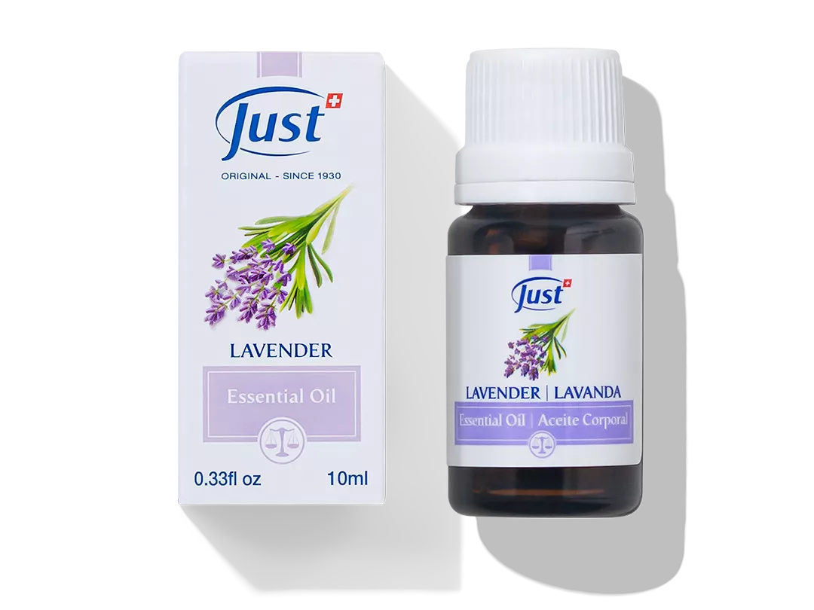
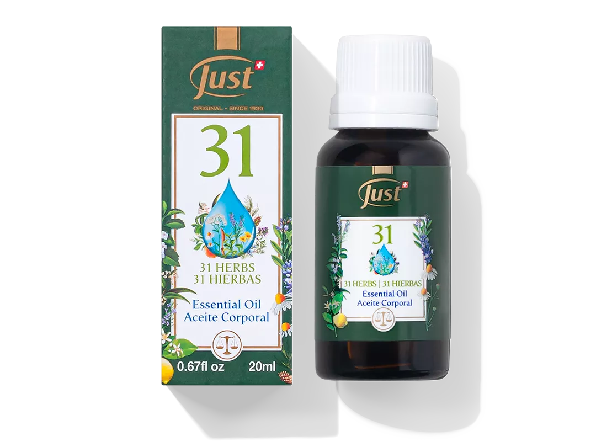
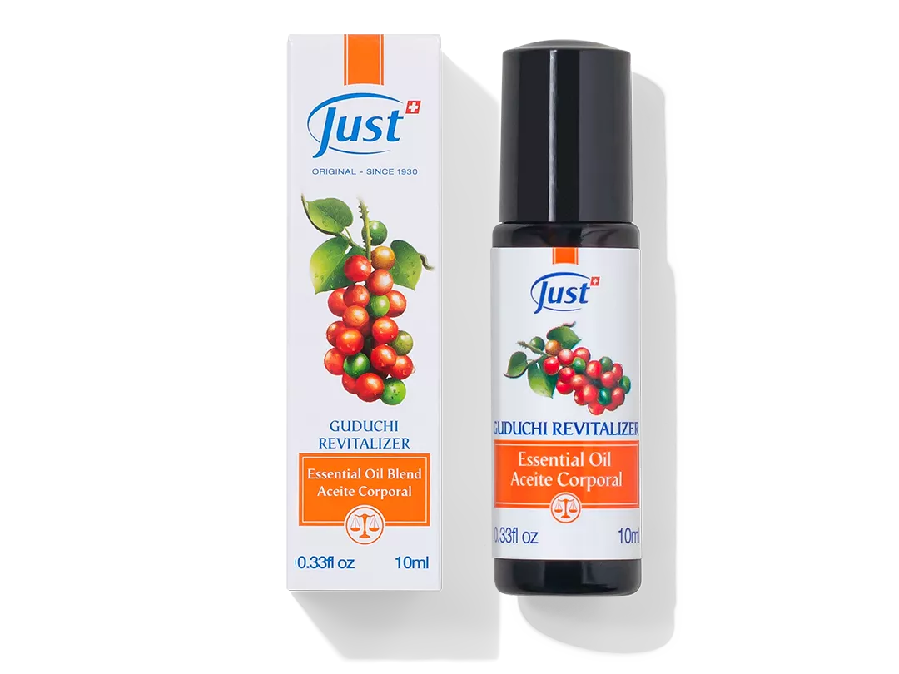
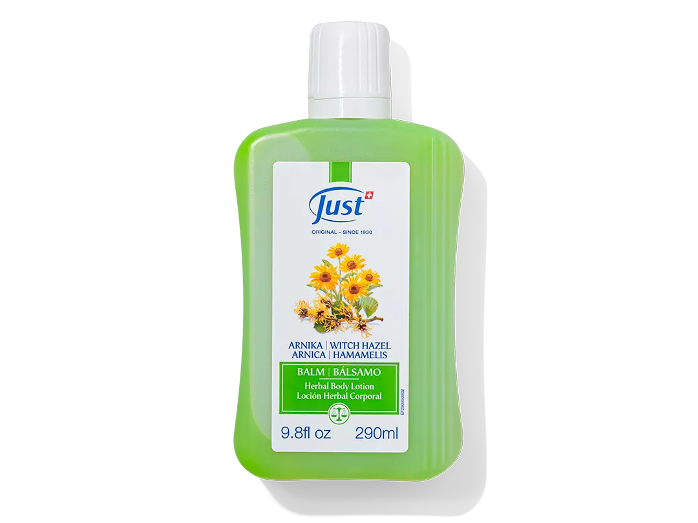
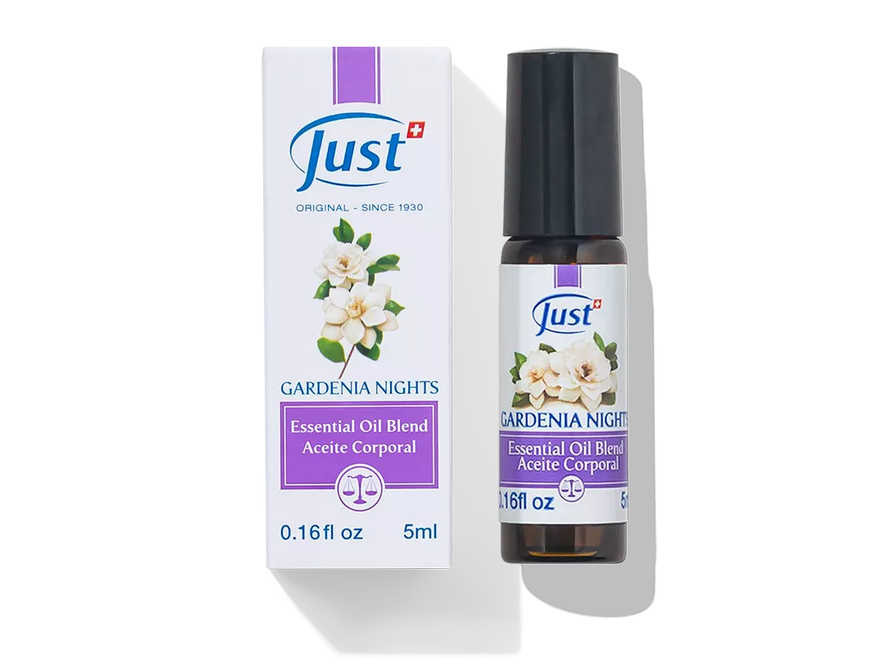
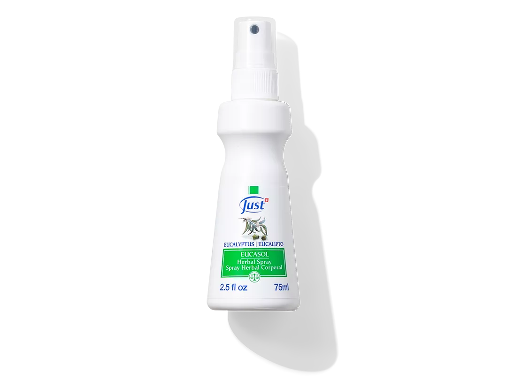
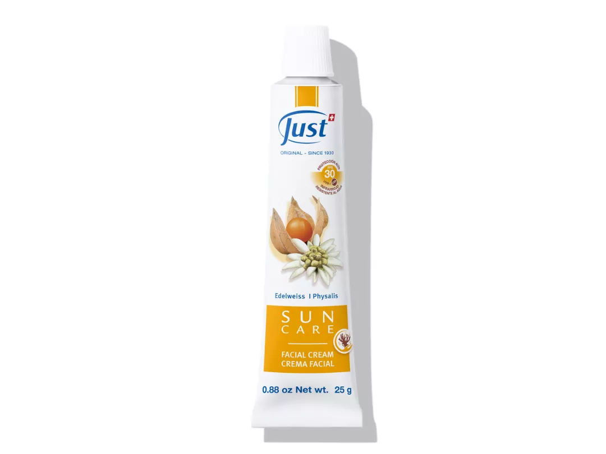
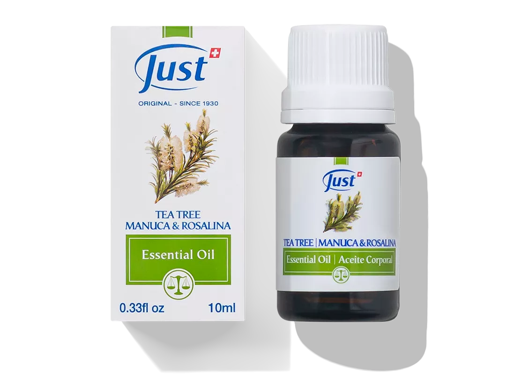

Aceite esencial de Lavanda
El más versátil: calma la mente, acompaña el sueño y reconforta la piel.
Consultar →Aceites esenciales puros y cremas herbales Just para acompañar tu día: aliviar tensiones, descansar mejor, respirar con libertad y cuidar tu piel.

Mira cómo lo usan y lo que cuentan quienes ya probaron los productos. Toca un video para verlo aquí mismo.
¿Sientes que vas en piloto automático, cansada o sin ánimo? Los aceites esenciales actúan a través del olfato y de la piel. En segundos ayudan a calmarte, a enfocarte o a recargar energía.

El más versátil: calma la mente, acompaña el sueño y reconforta la piel.
Consultar →
Mezcla para los días intensos. Te ayuda a bajar revoluciones y recuperar la calma.
Consultar →


¿No sabes qué aroma va contigo? Cuéntame cómo te sientes y te recomiendo el tuyo.
Escríbeme¿Dolor de cabeza al final del día, cuello rígido por la computadora o piernas cansadas? Las fórmulas herbales de Just, aplicadas con un masaje suave, ayudan a relajar y aliviar las molestias del día a día.
31 aceites esenciales en una sola fórmula. Refresca y afloja la tensión que causa dolores de cabeza y musculares.
Consultar →

Efecto calor que relaja músculos tensos por estrés, mala postura o deporte.
Consultar →

Loción corporal para masajes que alivia la sensación de piernas cansadas.
Consultar →“Hace dos años me compré el Óleo 31 y todavía me queda. Son de excelente calidad.”Miry · comentario en Zancada · ver fuente
Cuéntame dónde sientes la molestia y te digo qué producto y cómo usarlo.
Escríbeme¿Te acuestas cansada pero tu mente no se apaga? Un ritual de noche con aromas suaves le avisa a tu cuerpo que es hora de soltar el día.



Te armo un ritual de noche a tu medida. Escríbeme y lo conversamos.
EscríbemeEn los cambios de estación, cuando la nariz se tapa y cuesta descansar, los aceites de eucalipto y tomillo dan una sensación de frescura y alivio, en casa o de viaje.

Mezcla de aceites esenciales que despeja, refresca y purifica el ambiente.
Consultar →
Aroma fresco para inhalaciones y para despejar en épocas de frío.
Consultar →
Prepara tu botiquín natural para la familia. Te ayudo a armarlo.
EscríbemeUna rutina sencilla con ingredientes naturales: limpieza, hidratación y protección para que tu piel se vea luminosa todos los días.




Dime tu tipo de piel y te propongo una rutina simple y efectiva.
EscríbemeSi te gustan estos productos, también puedes compartirlos y ganar dinero. Puedes dedicarte a tiempo completo o como un ingreso adicional, con el respaldo de Just, empresa suiza con casi 90 años de historia y presencia en más de 35 países.
¿Te animas? Escríbeme y te explico cómo empezar, sin compromiso.
Quiero ser Consultora JustSoy consultora independiente de Just en Perú. Me encanta ayudarte a encontrar el producto ideal para lo que necesitas, explicarte cómo usarlo y acompañarte. Escríbeme por WhatsApp y te atiendo personalmente.
Un Encuentro de Bienestar es una reunión con tus amigas, familiares o compañeras de trabajo, en tu casa o de forma virtual. Yo, como tu consultora Just, preparo una demostración sobre el tema que elijas (aromaterapia, relajación, cuidado de la piel y más), para que todas prueben los productos en un ambiente tipo spa. Tú solo invitas y disfrutas.
Como Anfitriona ganas productos Just gratis o con descuento, según las ventas del Encuentro.
Quiero ser Anfitriona